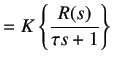
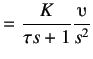
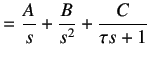
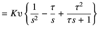
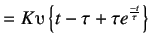
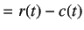
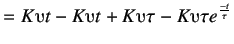
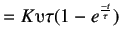
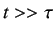
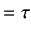

Next: Procedure Up: Identification of Transfer Function Previous: Conducting Ramp Test on
Identification of the transfer function of a system is important as it helps us to represent the physical system mathematically. Once the transfer function is obtained, one can acquire the response of the system for various inputs without actually applying them to the system. Consider the standard first order transfer function given below
 |
(3.1) | |
 |
(3.2) |
|  | (3.3) |
|  | (3.4) | |
|  | (3.5) |
|  | (3.6) |
Taking the Inverse Laplace transform of the above equation, we get
|  | (3.7) |
The difference between the reference and output signal is the error signal  . Therefore,
. Therefore,
|  | (3.8) | |
|  | (3.9) | |
|  | (3.10) |
Normalizing equation 3.10 for , we get
|  | (3.11) |